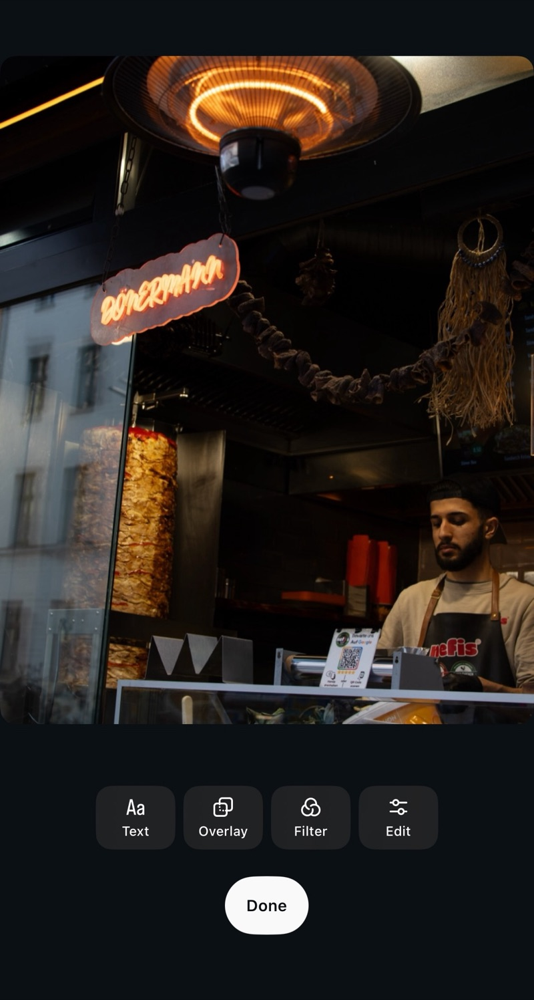
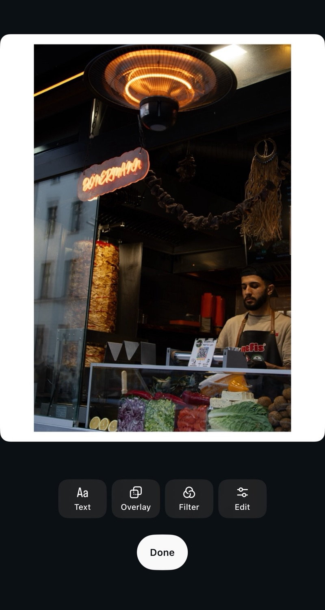
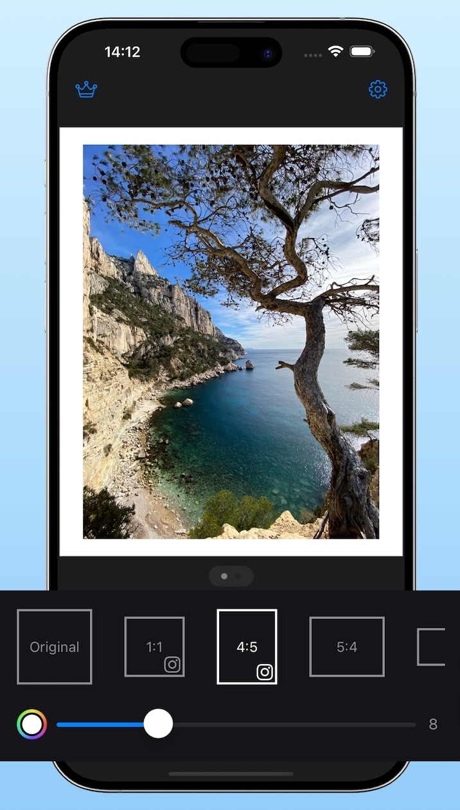

How to add borders to photos on iPhone
Add a white, black, or colored frame while keeping the whole photo visible.
Quick answer: Open your photo in Simple Border, choose Original for a frame or a target ratio such as 1:1 or 4:5, then select a border color and width. Save or share the result: the border fills extra space around your photo so you can keep the full composition.
Need only a crop or rotation? The built-in Photos editing tools may be enough. Use a border when you want to fit a different shape while retaining the edges of the image.

Cropping vs. adding a border
Cropping fills the new shape by removing part of the photo. A border makes room for the complete image instead. In this Instagram example, the border keeps both the ceiling detail and the lower part of the scene visible.


Add borders with Simple Border
Simple Border adds space around the photo rather than cutting into it. Use the same workflow for a white gallery frame, a black border, or a custom color. The output canvas can be larger than the input because it includes those extra pixels.
Steps
- Install Simple Border
Download Simple Border from the App Store and open the app. - Choose your photo
Tap the Choose Media button to pick a photo from your library, or share a photo from the Photos app into Simple Border via the Share Sheet. - Select an aspect ratio
Choose the format you need – for example, square (1:1), vertical 4:5 for Instagram feed, or Original to keep your existing aspect ratio. - Adjust border width and color
Drag the border slider until the frame looks right. Use the color picker to choose white, black, or any custom color that matches your image or brand.
- Export your bordered photo
Tap Share or Save to export your image back to Photos, or share directly to Instagram, Messages, and other apps.
When this workflow is useful
- No cropping – your full photo stays visible.
- Resolution preserved – the frame adds pixels around your photo. Choose an export quality that suits how you will use the result.
- Consistent formats – quickly switch between square, 4:5, 3:4, 9:16, and more.
- Fast workflow – reuse your last settings, batch export (with Premium), and use the Share Extension from Photos.
Tip: If you often post in the same format, enable only your favorite aspect ratios in Simple Border settings to make choosing even faster.
Check resolution, metadata, and HDR before sharing
Keeping the whole composition and retaining pixel dimensions are different from producing a lossless file. Export format and quality settings still matter. Save one image first and inspect it at full size before applying the same style to a batch.
For measured output dimensions and camera-metadata results, see our six-app photo export test. The comparison uses one Sony ZV-E10 photo; it does not establish identical results for every input or app version.
On iOS and macOS, Simple Border supports preserving HDR in compatible photos and videos. Keep HDR enabled for an HDR export, or tap the HDR pill or enable Always save as SDR in Settings for SDR. The display and viewing app affect how the highlights appear. See the HDR release notes for the supported workflow.
Tips for better-looking borders on iPhone
- Keep thickness consistent. Use the same border width across a series so your feed looks intentional.
- Match your subject. White borders feel classic; black or dark borders can work better for night or moody images; color borders are great for brand consistency.
- Use the right aspect ratio. For Instagram feed, vertical 4:5 usually gets more screen space than square; Stories and Reels are 9:16.
- Watch image quality. Avoid apps that overly compress your photo; check the result at full size before posting.
Simple Border is built to keep resolution high and add borders as pixels, which makes it especially good for photographers, marketing assets, and printing.
Related guides
Want to pick the right Instagram size first? Read the Instagram format guide. Preparing multiple photos for one post? Use the Instagram carousel photo guide. For a focused workflow, see how to add a black border or black bars. Choosing an app? Compare six white border apps and their measured exports.